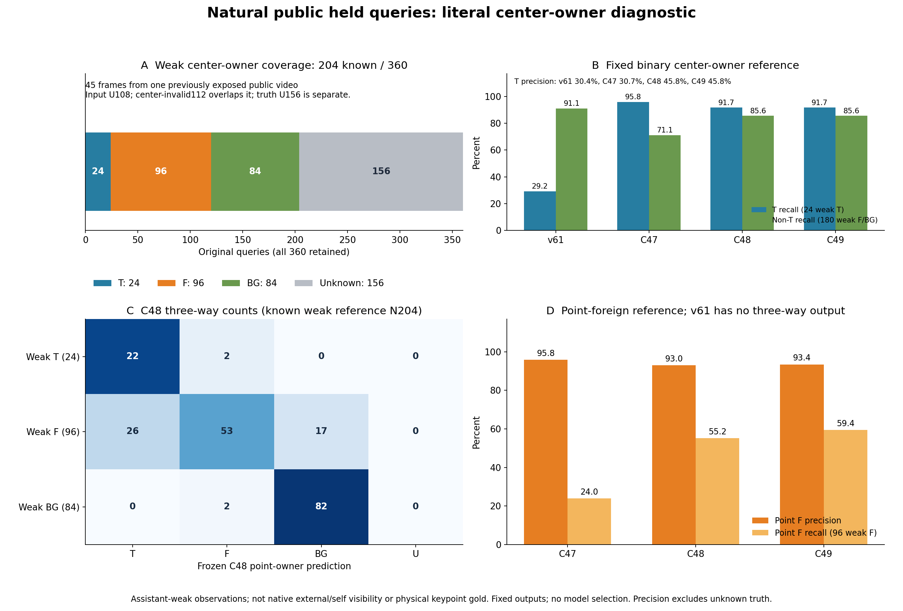
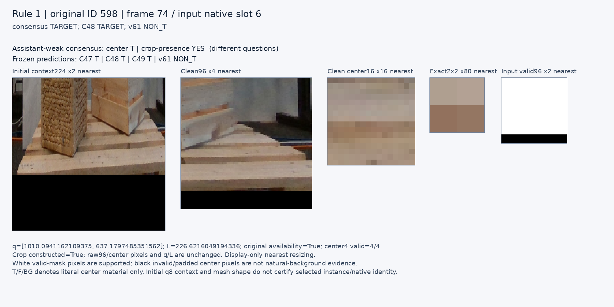
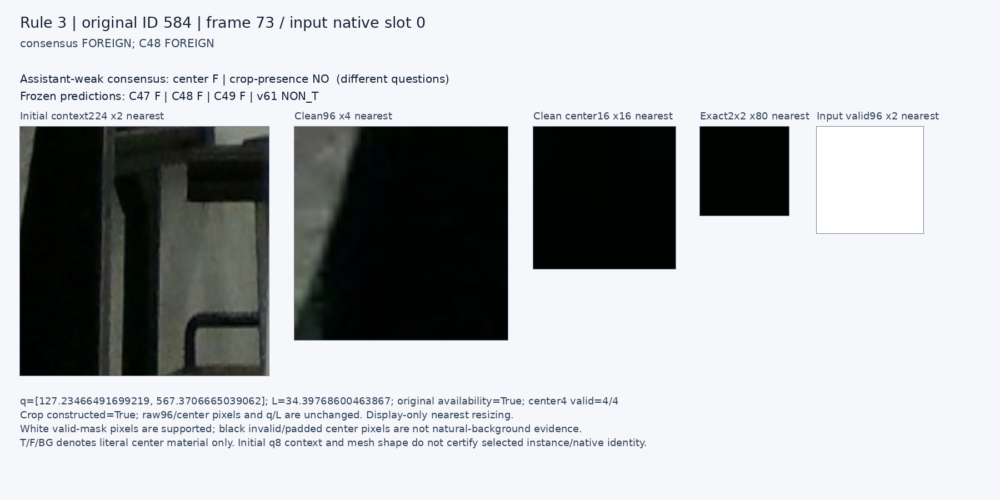
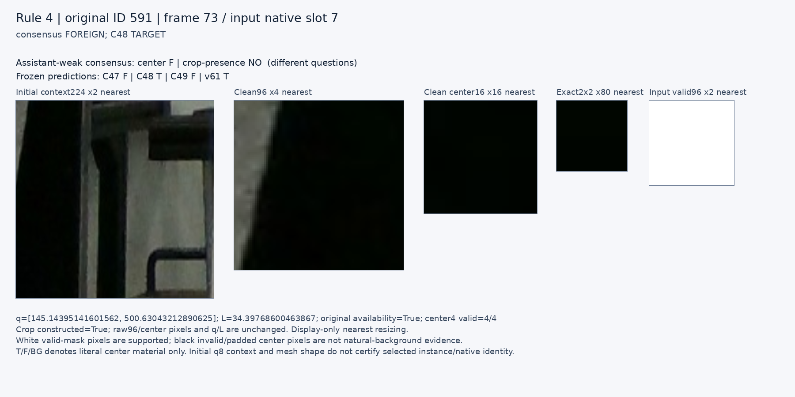
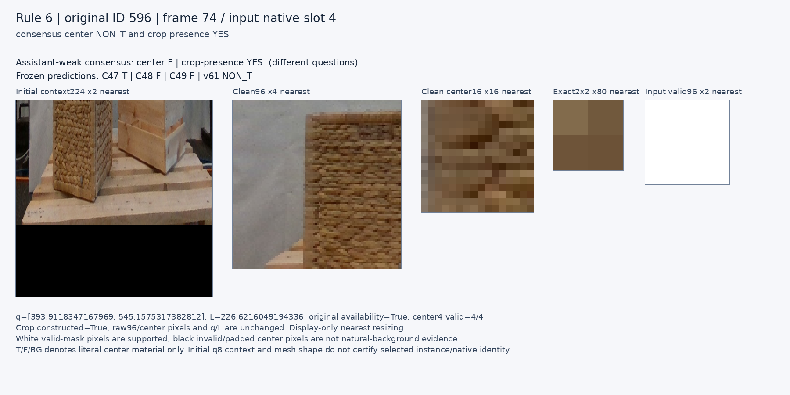
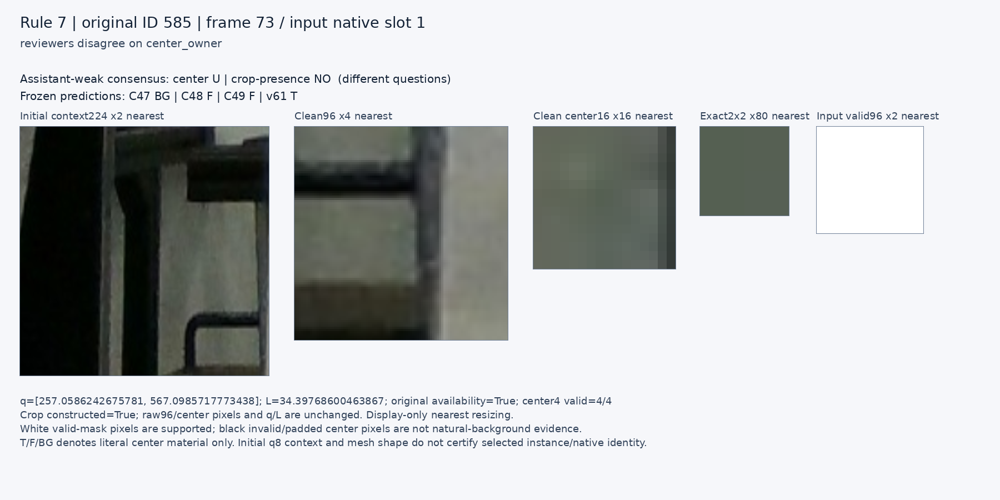
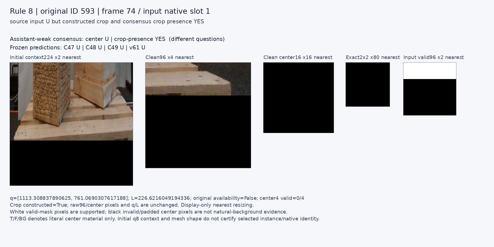

공개 자연영상: 중심 소속을 읽는 진전과 남은 한계
공개 자연영상 한 개의 고정 질의에서 literal center-owner와 약한 관찰의 대응을 확인했습니다. 원 native 외부가림 성능 향상이나 완전 전이 성공을 뜻하지 않습니다.
고정 출력 비교
C48/C49의 약한 T 재현율은22/24(91.7%)이며 v61은7/24(29.2%)입니다. C48/C49 T precision은22/48(45.8%)이고, non-T 재현율154/180(85.6%)은 v61의164/180(91.1%)보다 낮습니다.
| 모델 | T precision | T recall | non-T recall | 출력 U |
|---|
| v61 | 30.4% | 29.2% | 91.1% | 109/360 |
| C47 | 30.7% | 95.8% | 71.1% | 108/360 |
| C48 | 45.8% | 91.7% | 85.6% | 108/360 |
| C49 | 45.8% | 91.7% | 85.6% | 108/360 |
P/R 분모는 중심 known204입니다. truth UNKNOWN156은 오답으로 세지 않고 별도 보존합니다. known204에서 모델U는0입니다.C48의 점 F precision/recall은53/57(93.0%)/53/96(55.2%), C49는57/61(93.4%)/57/96(59.4%)입니다. v61에는 F/BG를 가르는3way 출력이 없습니다.

분모와 해석
- 전체360행 중 약한 중심 known204(T24/F96/BG84), UNKNOWN156을 보존했습니다. 원 입력U108과 중심invalid112는 겹치며 합산하지 않습니다. crop presence known268(YES223/NO45)은 별도 관찰입니다.
- 새 head3개는 원 입력U108, v61은 자체가용성U109입니다. all4 paired251과 known204를 분리했고 known204에서는 모델U가0입니다.
- 두 assistant의 새 점수 blind 관찰이지만 이45프레임 영상은 이전 native 평가에서 반복 노출됐습니다. 사람·픽셀·물리 native gold가 아니며 selected-instance 모호성은 UNKNOWN입니다.
- 공식 obj1 mesh가 팔레트 형상이라는 확인은 해당 프레임에서 초기 q8이 지칭하는 물리 instance나 native 대응을 인증하지 않습니다.
- 새 모델/문턱/데이터 선택·라벨 교정·학습 편입은 없습니다. 기존 전체 native qualification과 최종 과제는 미해결입니다.
all4 입력 paired251과 중심 known204는 서로 다른 분모입니다. 중심 소속과 crop 어느 곳에든 팔레트가 보이는지는 별개입니다. F/BG를 진짜 native 외부가림으로 바꾸어 해석하지 않습니다.
동결 규칙의 사례
8개 규칙마다 원global ID 오름차순의 첫 미표시 사례만 선택했습니다. 빈 규칙은 그대로 남겼습니다. 선택된6사례는 오름차순 규칙의 결과로2프레임에 집중되며, 결과별 설명용이지 대표 표본이 아닙니다. 깨끗한 원96·center16[40:56]·center2[47:49]는 byte 보존했고 배율은 nearest display입니다. 카드의 글자·배치는 모델 입력이 아닙니다.
규칙 1 · 원 ID 598

raw96 · center16 · center2 · valid96 · context224 · 원 reviewer frame sheet
A/B 원 관찰
A: 중심 TARGET_VISIBLE_SUPPORTED / crop YES
중심 네 샘플은 전경 팔레트의 밝은 상판 면에 놓인다. 주변 목재 연결도 명확하다.
B: 중심 TARGET_VISIBLE_SUPPORTED / crop YES
중심은 상자 아래 연결된 팔레트 상단 보드. crop에도 팔레트가 보임.
규칙 2: 없음
consensus TARGET; C48 NON_T; v61 TARGET — EMPTY_NO_MATCH. 대체 사례를 고르지 않았습니다.
규칙 3 · 원 ID 584

raw96 · center16 · center2 · valid96 · context224 · 원 reviewer frame sheet
A/B 원 관찰
A: 중심 FOREIGN_VISIBLE_SUPPORTED / crop NO
중심은 검은 가구 프레임의 넓은 어두운 면이며 crop에 팔레트 재질은 보이지 않는다.
B: 중심 FOREIGN_VISIBLE_SUPPORTED / crop NO
중심 네 표본은 검은 탁자 구조물. crop에 팔레트 재료는 보이지 않음.
규칙 4 · 원 ID 591

raw96 · center16 · center2 · valid96 · context224 · 원 reviewer frame sheet
A/B 원 관찰
A: 중심 FOREIGN_VISIBLE_SUPPORTED / crop NO
검은 프레임의 어두운 면이 중심을 차지한다. 팔레트 없는 좁은 crop이다.
B: 중심 FOREIGN_VISIBLE_SUPPORTED / crop NO
중심은 검은 탁자 구조물. crop에 팔레트 없음.
규칙 5: 없음
consensus BACKGROUND; C48 TARGET — EMPTY_NO_MATCH. 대체 사례를 고르지 않았습니다.
규칙 6 · 원 ID 596

raw96 · center16 · center2 · valid96 · context224 · 원 reviewer frame sheet
A/B 원 관찰
A: 중심 FOREIGN_VISIBLE_SUPPORTED / crop YES
중심은 세워진 짜임 바구니 면이다. crop 하단 왼쪽에 전경 팔레트 목재가 보인다.
B: 중심 FOREIGN_VISIBLE_SUPPORTED / crop YES
중심은 바구니 표면. crop 아래쪽 팔레트 보드도 보임.
규칙 7 · 원 ID 585

raw96 · center16 · center2 · valid96 · context224 · 원 reviewer frame sheet
A/B 원 관찰
A: 중심 UNKNOWN / crop NO
회색 평면의 천/벽 소속이 분리되지 않으며 주변은 검은 프레임이다. 팔레트는 보이지 않는다.
B: 중심 BACKGROUND_SUPPORTED / crop NO
중심은 탁자 틈의 회색 벽. crop은 벽과 탁자만 보임.
규칙 8 · 원 ID 593

raw96 · center16 · center2 · valid96 · context224 · 원 reviewer frame sheet
A/B 원 관찰
A: 중심 UNKNOWN / crop YES
중심은 영상 밖이지만 유효 위쪽에 전경 팔레트의 우측 목재 단부가 보인다.
B: 중심 UNKNOWN / crop YES
중심은 원inputU. 위쪽 유효crop에 팔레트 앞보드가 보임.
원 기록
평가 완료 · 모든 cohort/native8 교차표 · 전360행 ledger · 독립 숫자 감사 · obj1 형상 확인의 범위 · 원45 frame gallery
기계 판독 결과·해시
ROOT_RESULTS_KO.json{
"original_input_U": 108,
"center4_invalid": 112,
"input_available_center4_invalid": 4,
"no_constructed_crop": 24,
"consensus_center_known": 204,
"consensus_center_unknown": 156,
"consensus_center_unknown_beyond_forced112": 44,
"consensus_crop_known": 268,
"consensus_crop_unknown": 92,
"model_prediction_U": {
"C47": 108,
"C48": 108,
"C49": 108,
"v61": 109
},
"all4_model_paired_available": 251
}